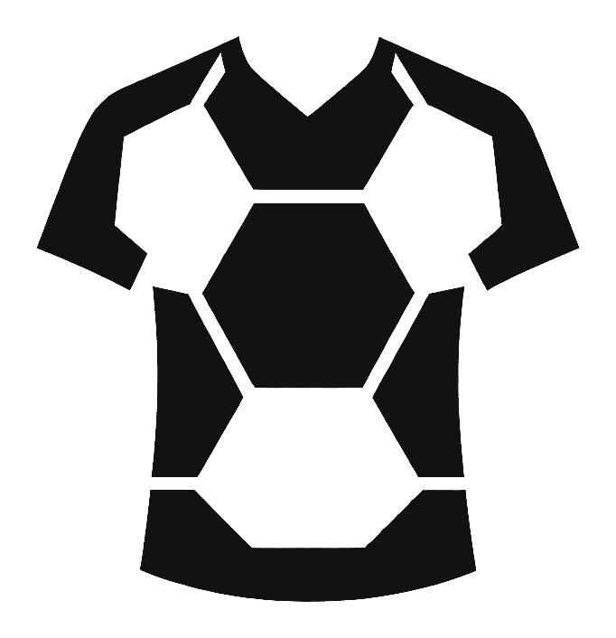
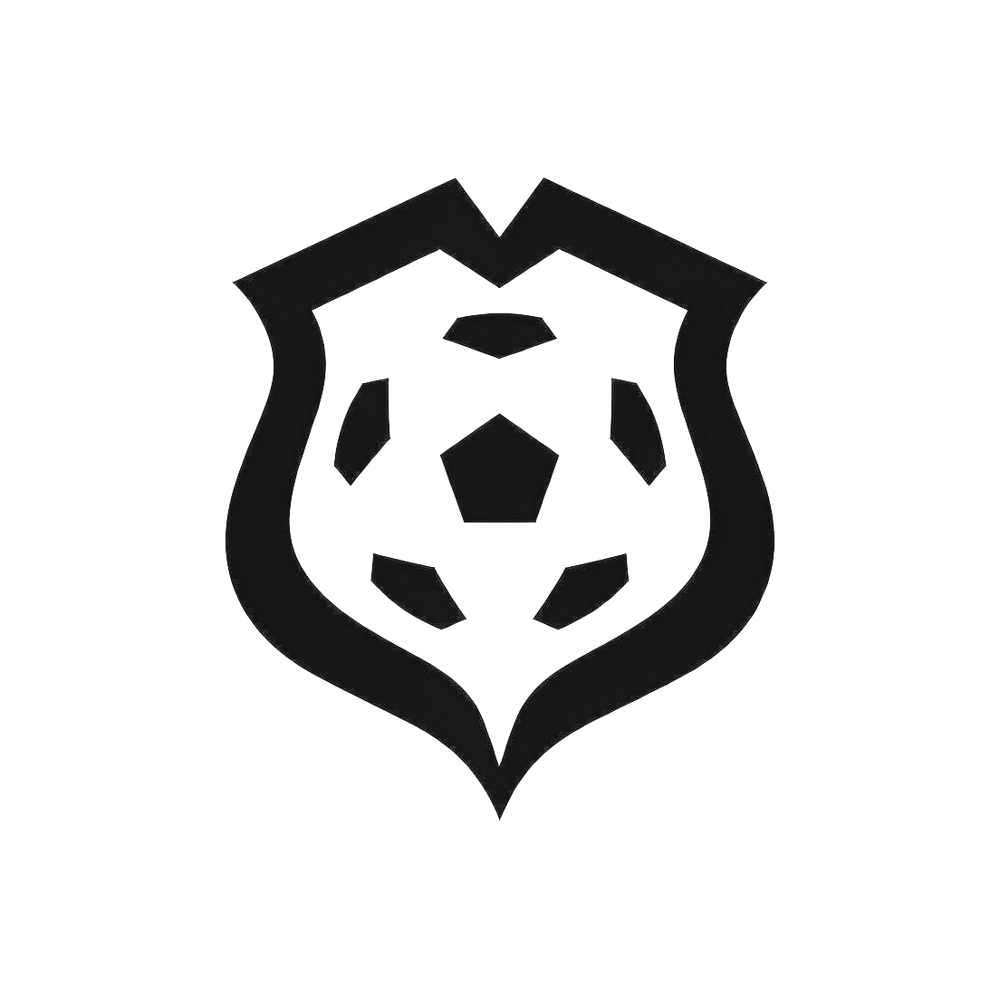
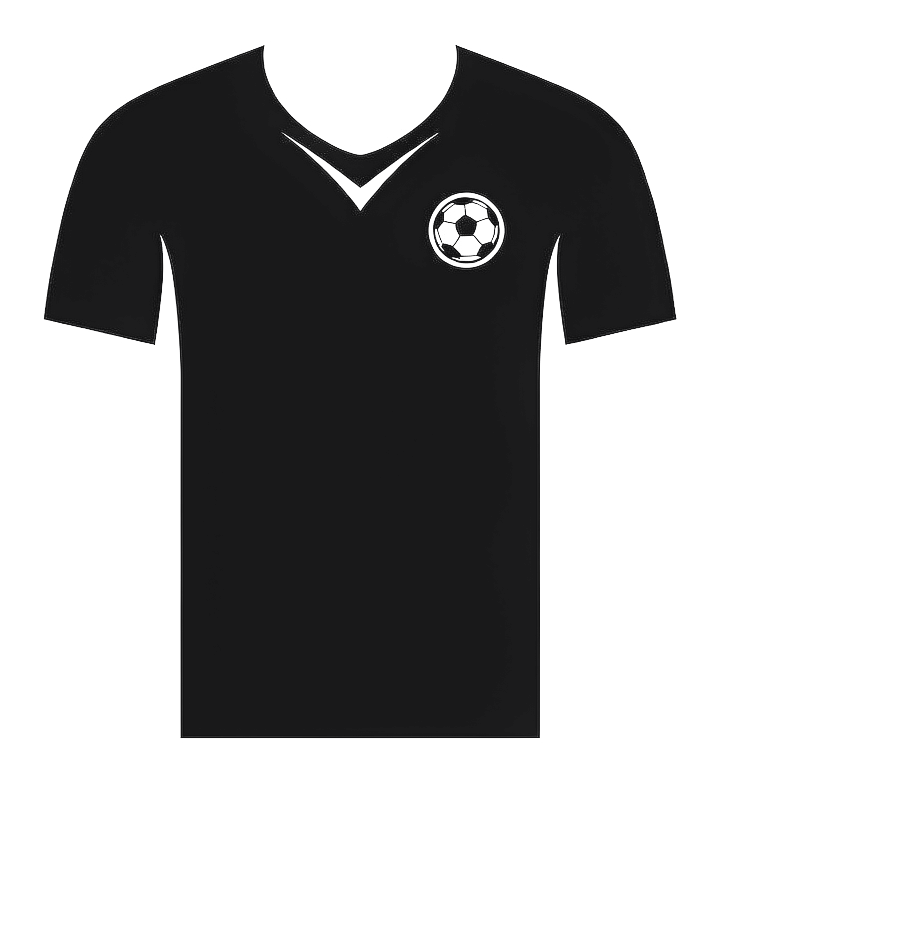
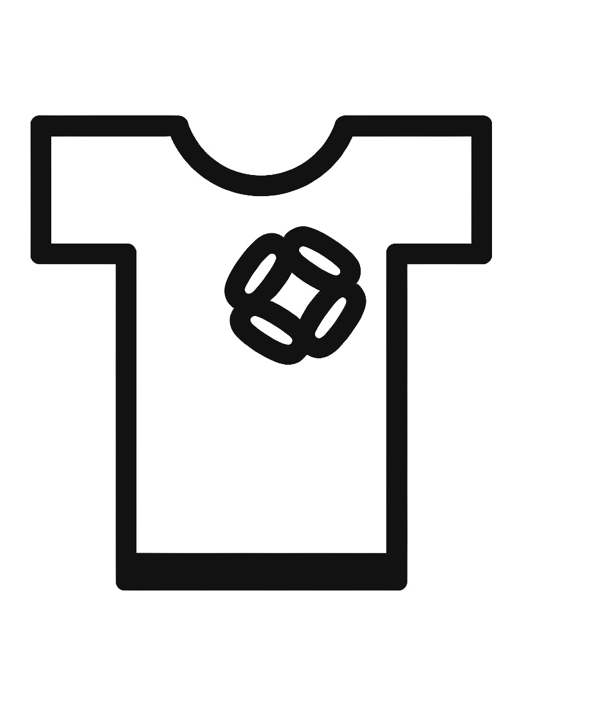

全部为 真透明背景 PNG（已去底、去水印、按内容裁边）。每个方向提供两个色版： 深色版（用于浅色背景）与 浅色版（用于深色背景）。下方把两张分别放在深/浅底上看实际效果， 并附 24 / 48 / 96px 缩小测试，确认小尺寸下是否还认得出。
整件球衣由足球的黑白块面拼成，造型即品类，辨识度最高，几何也最克制。
logo-panel-dark.png / -light.png


经典俱乐部徽章结构，足球居中、盾形收边，正式、可信，适合做店铺主标识与吊牌。
logo-emblem-dark.png / -light.png


整块球衣剪影，胸前一枚球徽，最直白地表达"卖球衣"，冲击力强，适合社媒头像。
logo-jersey-dark.png / -light.png


描边风格，轻、偏潮牌；但中间足球图形偏抽象，小尺寸下略糊，建议作为备用。
logo-line-dark.png / -light.png

